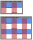
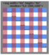
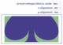
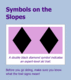

Chapter 8 Scaling Up: Defining Coordinate Systems
In this chapter, we introduce the ways you can control the coordinate system. Which means we’ll introduce the scalable side of Scalable Vector Graphics. By controlling the coordinate system, you control the size of your graphics.
This chapter focuses on defining the initial coordinate systems for your graphic. Defining a coordinate system means setting the origin point, establishing the size of a user unit, and determining the meaning of 100% width or height. All of these are set with the powerful viewBox attribute we’ve already mentioned multiple times. Other attributes control the size and alignment.
The coordinate system concepts discussed in this chapter will be revisited in the following chapters. The attributes used to define the initial coordinate system of an <svg> are also used in scaling reused content (<use> and <image>), creating local coordinate systems (with nested <svg>), and cropping the graphic during embedding (with <view>).
Another way to modify coordinate systems is by geometrically transforming them, as we’ll discuss in Chapter 11. Transformations can also change the origin and the size of a user unit. Transformations don’t change the meaning of 100% width and height (at least, they don’t change it proportional to the size of a user unit). Transformations can also rotate or skew the x and y axes, which is not possible when you’re creating coordinate systems with viewBox.
Figures and Examples#
The file names link to the code view on GitHub. Beware: the linked screenshots are hi-resolution; some have very large file sizes.
View all files for this chapter on GitHub.
 Figure 8-1. Positioning a point in a 2D Cartesian coordinate systems
Figure 8-1. Positioning a point in a 2D Cartesian coordinate systems-
Black lines are the axes, while the orange-red (tomato) line shows how the coordinates are measured.
 Figure 8-2. Two-dimensional coordinate systems, as they are defined in algebra textbooks (top) versus how they are defined in SVG (bottom)
Figure 8-2. Two-dimensional coordinate systems, as they are defined in algebra textbooks (top) versus how they are defined in SVG (bottom)-
Each coordinate system is 100 units wide and 100 units tall, and the orange path is drawn from (0,0) to (50,50) in each.
- Figure 8-3. A plaid SVG grid, in two differently sized SVG viewports
-
- SVG file for the complete figure,
viewport-sizes.svg (using nested SVG and
<use>to represent the two windows) - SVG file used for the content of each "window", viewport-grid.svg (can also be viewed directly, resizing the browser window)
- PNG screenshot, viewport-sizes.png
- SVG file for the complete figure,
viewport-sizes.svg (using nested SVG and
- Figure 8-4. The same plaid SVG grid, scaled to fit the viewport using a viewBox attribute
-
- SVG file for the figure, viewport-viewBox.svg (again using viewport-grid.svg to draw the content)
- PNG screenshot, viewport-viewBox.png
- Figure 8-5. Two SVGs with the same shapes, using (top) default and (bottom) centered coordinate systems
- Example 8-1. Using viewBox to create a centered coordinate system
- Figure 8-6. Using viewBox to scale a graphic to fit, at various sizes
- Example 8-2. Using viewBox to scale a graphic to fit
- Figure 8-7. Using viewBox to scale a graphic to fit, without preserving the aspect ratio
 Figure 8-8. A graphic resized with viewBox and slice scaling, with xMinYMax alignment
Figure 8-8. A graphic resized with viewBox and slice scaling, with xMinYMax alignment- Figure 8-X1. Setting the graphic to slice using a dynamic web form
- Example 8-X1. Dynamic demonstration of preserveAspectRatio options
- Figure 8-9. A web page with an SVG that fills a controlled aspect ratio container
- Example 8-3. Using an HTML element with padding-controlled aspect ratio to scale an SVG evenly in both directions
- Example 8-4. Using sliced SVG scaling, visible overflow, and padding-controlled aspect ratio to scale an SVG evenly in both directions
- Figure 8-10. A web page with a controlled aspect ratio SVG inside an HTML5 figure
{kind=link}
{kind=link}
{kind=link}
{kind=link}
{kind=link}
{kind=link}
{kind=link}
{kind=link}
{kind=link}
{kind=link}
{kind=link}
{kind=link}
{kind=link}
{kind=link}
{kind=link}
{kind=link}
{kind=link}
{kind=link}
{kind=link}
{kind=link}
{kind=link}
{kind=link}
{kind=link}
{kind=link}
{kind=link}
{kind=link}
{kind=link}
{kind=link}
{kind=link}
{kind=link}
Online Extras#
- “The Limits of Numbers in SVG”: SVG coordinates are scalable, independent of pixels. But in practice, you can't use just any scale you choose.
- “Dynamically Changing preserveAspectRatio”: A ready-to-use playground for exploring meet, slice, and none preserveAspectRatio options.
- Reference: SVG Elements and Attributes